判断 01
Workflow 与 Agentic 不是产品级二选一，而是每个步骤应交给确定性代码还是概率模型的局部决策。高风险写操作应优先保留显式规则、验证和人工确认。
OFFLINE LEARNING LIBRARY · 2026-07-15
从 workflow/agentic、context engineering 和 MCP 治理，推进到状态恢复、可观测性与持续评测。
openai/whisper-large-v3 长音频转写和 12 张幻灯片交叉整理。机器稿做了产品名术语校正，但人名、数字与断句仍应回到时间戳核验。位于本知识库“推理与 Agent”到“运行时、评测、安全与反馈闭环”之间，补足 Kaggle Day 3/5 的企业 Java 与云原生架构实现视角。
这场分享把企业级 AI Agent 视为一套 AI 原生分布式系统：模型与工具只是数据面的一部分，真正决定生产可用性的还有工作流控制、上下文编排、MCP/模型网关、状态恢复、全链路观测和持续评测。
Bilibili 原视频 · 本地 720p 视频 · 可搜索中文稿 · Markdown 稿 · Whisper VTT · 原始转写 JSON
时间轴链接回原视频
| 时间 | 章节 | 内容结论 | 在主线中的作用 |
|---|---|---|---|
| 00:00 | Software 1.0 → 2.0 → 3.0 | 编程对象从显式代码、神经网络权重推进到以 Prompt 驱动的大语言模型；AI 原生应用的本质是把概率模型纳入软件控制流。 | 建立为什么 Agent 架构不能只沿用传统微服务接口与监控的背景。 |
| 02:10 | AI Agent 核心要素与开发全景 | Agent 由感知、模型决策、工具和长短期记忆组成；外围还需要开发框架、运行时、模型与 MCP 服务、配置/注册、消息系统和可观测性。 | 把模型能力扩展为可运行、可治理、可诊断的系统全景。 |
| 05:30 | Workflow 与 Agentic 的混合选择 | 固定流程提供确定性，Agentic loop 用模型动态规划下一步；真实系统通常按任务风险、准确性与 GPU 成本组合两者。 | 给出控制权应留在代码还是交给模型的第一层架构决策。 |
| 07:30 | 单 Agent 与多 Agent | 默认使用更易开发维护的单 Agent；当上下文膨胀、任务很长或需要角色协作时再拆成多 Agent，并以 Deep Research 的 leader-worker 模式举例。 | 将多 Agent 视为复杂度和上下文隔离手段，而不是默认能力升级。 |
| 09:40 | Prompt Engineering → Context Engineering | 复杂 Agent 的输入不仅是 Prompt，还包含 RAG 文档、工具结果、状态与记忆；上下文工程负责在有限窗口内选择、排序和复用信息。稳定前缀与变化内容后置有利于 KV Cache。 | 把提示词优化提升为运行时上下文编译与缓存问题。 |
| 12:00 | AI 原生应用参考架构 | 用户流量经 API Gateway 进入 Agent Runtime，再由 AI Gateway 连接多模型与工具；数据库/向量库、Nacos、消息系统和 OpenTelemetry 分别承担知识、治理、状态与观测职责。 | 给出数据面、控制面、状态面和观测面的组件边界。 |
| 15:00 | Nacos 与 Higress：MCP 注册和 AI Gateway | Nacos 被用于企业内部 MCP 注册发现、健康检查和 Prompt 管理；Higress 统一代理模型与 MCP 流量，承接认证、限流、缓存和协议适配。 | 将工具治理和模型接入从 Agent 业务代码中分离。 |
| 17:00 | RocketMQ 与长任务状态恢复 | 把长周期 Agent session 的中间输出写入消息流，使消费节点失败后能切换并继续传递结果，避免从头重复昂贵的模型推理。 | 把 Agent 可靠性从一次性调用提升到可恢复的事件驱动执行。 |
| 19:10 | OpenTelemetry 全链路可观测性 | 围绕“用起来、用得省、用得好”采集客户端、网关、Agent、工具、模型和 GPU 的 traces、metrics、logs、输入输出与 token 消耗。 | 建立性能、成本和质量分析所需的证据链。 |
| 21:50 | TED、TTFT、TPOT 与 Trace | 视频提出用 Token/Error/Duration 补充传统 RED，并用 TTFT、TPOT、KV Cache 命中率区分 prefill 与 decode；单次 trace 关联工作流节点、耗时、token 和模型内部阶段。 | 把“Agent 很慢/很贵”拆成可定位、可对照的运行指标。 |
| 24:10 | 评测作为持续回归测试 | 开发早期使用人工和已知答案样例，稳定后引入 LLM-as-a-Judge；上线后持续抽取 traces，并分别评价 planning、工具选择/参数和 RAG 召回质量。 | 把一次性 Demo 评估改成开发—部署—反馈—迭代闭环。 |
| 28:00 | LoongSuite 与开源项目路线 | LoongSuite 基于 OpenTelemetry 为 Java、Go、Python 和 AI 框架提供探针；结尾串联 Spring AI Alibaba、Higress、Nacos、RocketMQ 与 A2A/评测能力规划。 | 将参考架构映射到可验证的开源实现，但版本能力需以当前仓库为准。 |
按职责分层，而不是按产品名记忆
| 层 | 组件/机制 | 责任边界 |
|---|---|---|
| 交互与流量入口 | Client、API Gateway | 鉴权、路由、流式连接和请求边界。 |
| Agent 控制面 | Workflow/Agentic loop、单/多 Agent、Context Engineering | 计划、状态、上下文选择和执行策略。 |
| 模型与工具数据面 | AI Gateway、LLM、MCP Server、数据库/向量库 | 统一模型访问、工具调用、知识检索和协议适配。 |
| 配置与服务治理 | Nacos、Prompt/MCP Registry | 动态配置、私有工具注册发现、健康与版本治理。 |
| 状态与事件 | RocketMQ、session、checkpoint | 长任务中间结果、异步解耦、失败恢复和消费切换。 |
| 观测与评测 | OpenTelemetry、LoongSuite、metrics/traces/logs/evaluation | 关联性能、成本、质量、工具轨迹和回归反馈。 |
视频最有价值的不是指定一套阿里技术栈，而是把 Agent 业务逻辑与流量、模型/工具接入、配置治理、状态恢复、观测评测拆成独立边界。替换云厂商或框架时，这些责任仍然存在。
点击画面回到对应视频时间
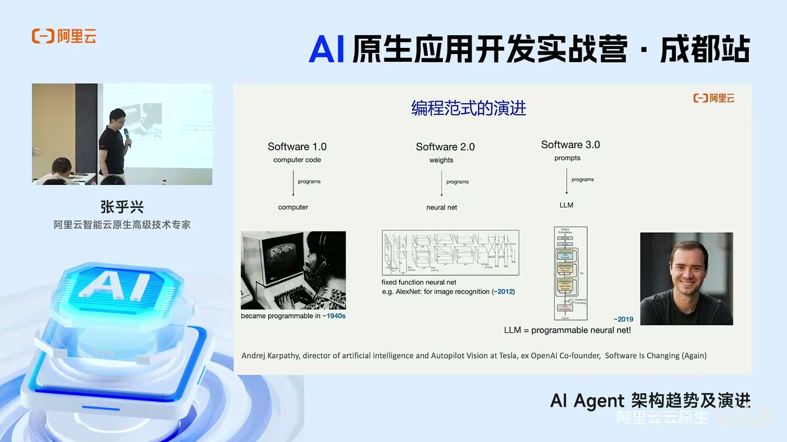
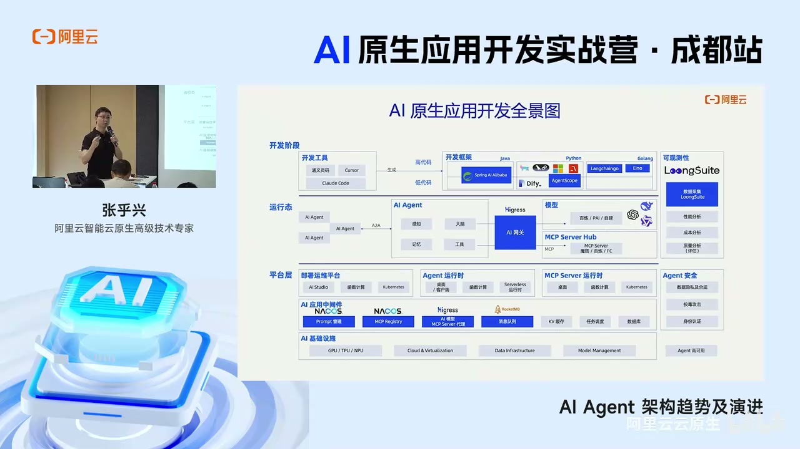
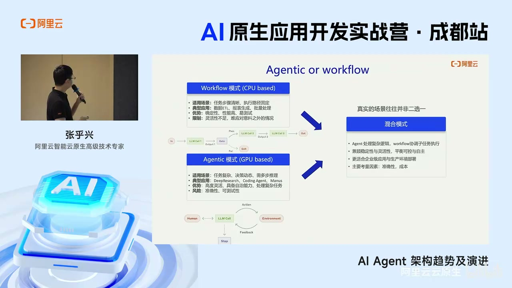
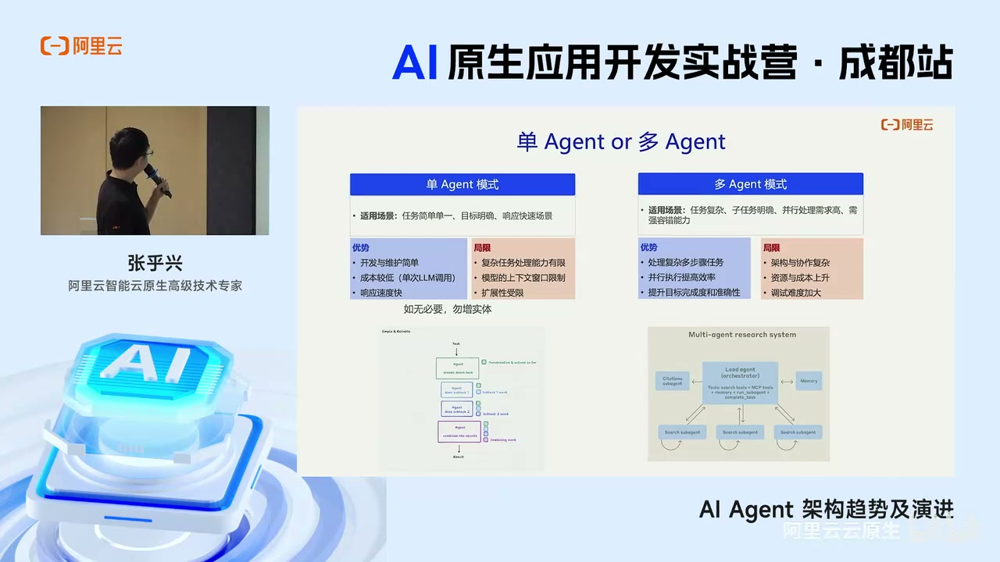
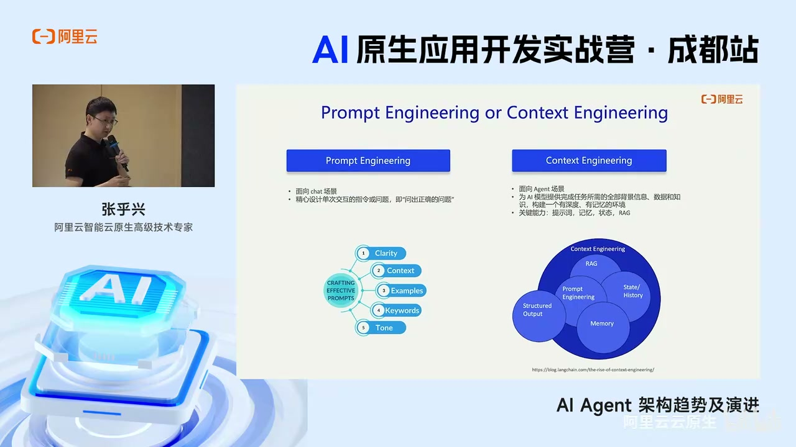
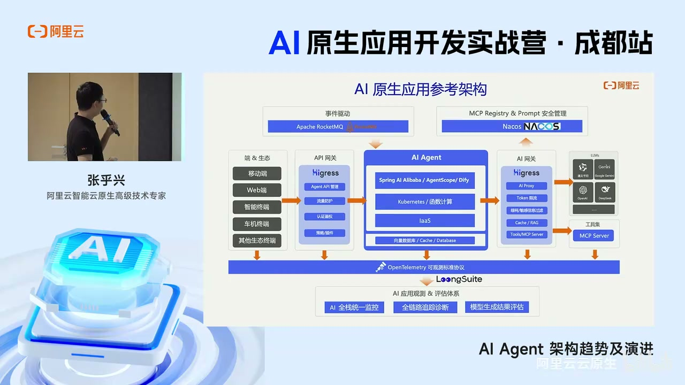
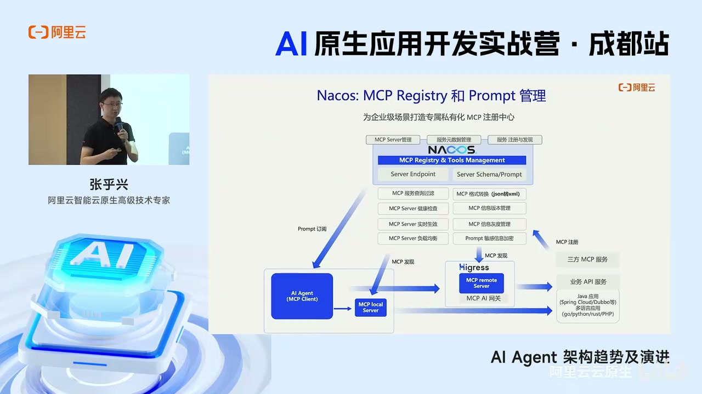
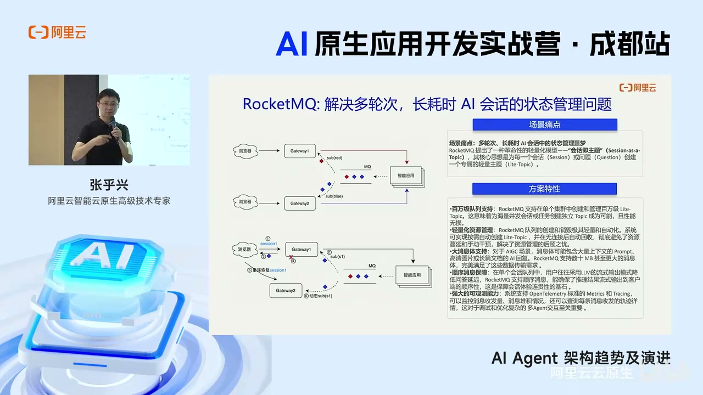
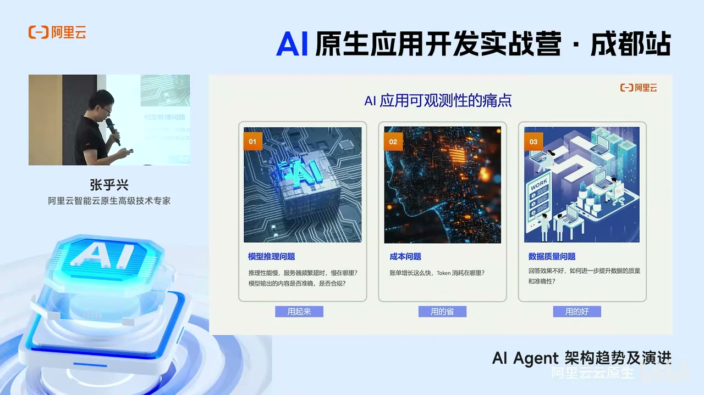
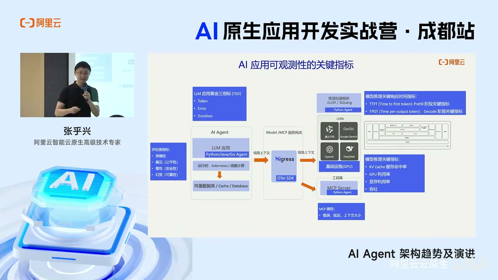
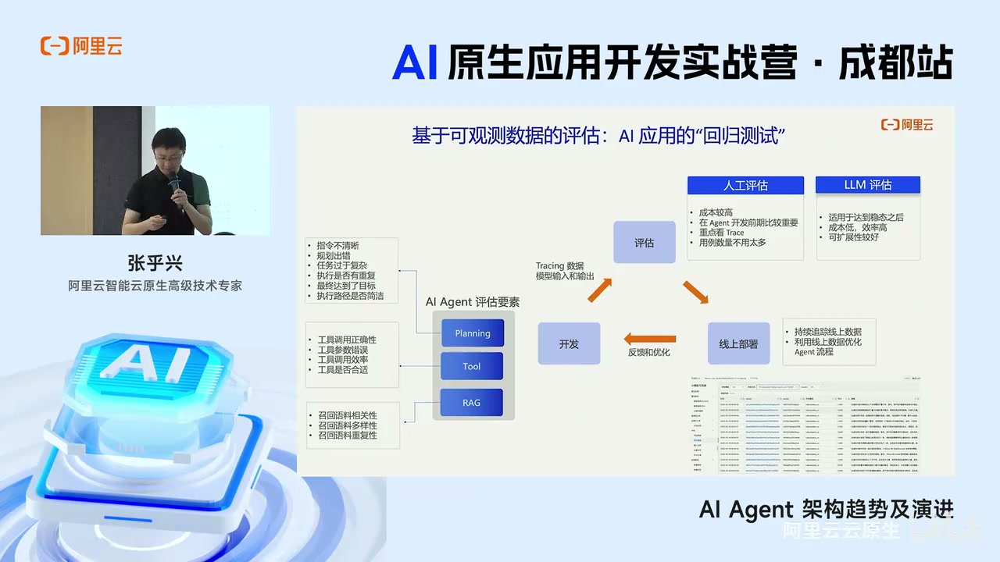
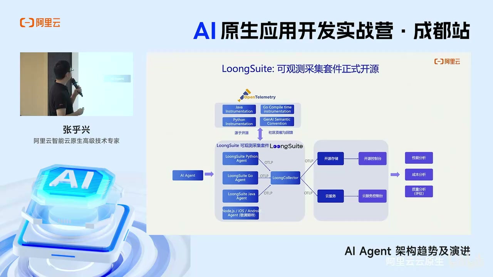
区分讲者经验、可验证机制和实现缺口
判断 01
Workflow 与 Agentic 不是产品级二选一，而是每个步骤应交给确定性代码还是概率模型的局部决策。高风险写操作应优先保留显式规则、验证和人工确认。
判断 02
单 Agent 是默认基线；只有当上下文污染、责任边界、并行性或失败隔离的收益超过协调成本时才拆成多 Agent。视频中“多 Agent 提升准确率”属于讲者经验判断，仍需在自己的任务上做等预算对照。
判断 03
Context Engineering 是运行时信息系统：选择哪些 Prompt、RAG 文档、工具结果、状态和记忆进入窗口，并决定顺序、压缩、缓存与淘汰。
判断 04
MCP Registry 与 AI/MCP Gateway 解决的是治理，而不是 Agent 推理本身。生产验收还必须覆盖身份、权限、工具版本、schema 兼容、审计和限流。
判断 05
消息队列可以承载长任务中间事件和恢复，但完整可靠性仍依赖幂等工具调用、顺序语义、checkpoint 一致性、超时与补偿；视频没有展开这些实现边界。
判断 06
Agent 可观测性需要把请求级 RED 与 token/模型级 TTFT、TPOT、KV Cache，以及任务级成功率和轨迹质量分层，不能用单一平均延迟代表系统状态。
判断 07
评测应拆到 planning、工具选择与参数、RAG 召回、最终产物和副作用，并把离线黄金集、线上抽样、人工复核和 LLM judge 组织成持续回归。
每个实验都要求质量、成本、延迟和失败归因
延伸仓库用于核对当前能力，不代表视频当时已实现全部规划
| 资料 | 性质 | 优先级 |
|---|---|---|
| 原始 Bilibili 视频 | 视频原文 | 必读 |
| Spring AI Alibaba | 官方延伸仓库 | 推荐 |
| Higress AI Gateway | 官方延伸仓库 | 推荐 |
| Nacos | 官方延伸仓库 | 推荐 |
| Apache RocketMQ | 官方延伸仓库 | 选读 |
| LoongSuite Python Agent | 官方延伸仓库 | 推荐 |
| OpenTelemetry GenAI Semantic Conventions | 开放标准 | 推荐 |